Import and convert to spherical objects:
data(example_planes_df)
data(example_lines_df)
planes <- Plane(example_planes_df$dipdir, example_planes_df$dip)
lines <- Line(example_lines_df$trend, example_lines_df$plunge)Equal-area projection
Lambert equal area, lower hemisphere projection is the default plotting setting.
stereoplot()
points(lines, col = "#B63679", pch = 19, cex = .5)
points(planes, col = "#000004", pch = 1, cex = .5)
legend("topright", legend = c("Lines", "Planes"), col = c("#B63679", "#000004"), pch = c(19, 1), cex = 1)
title(main = "Example data", sub = "Lambert equal area, lower hemisphere projection")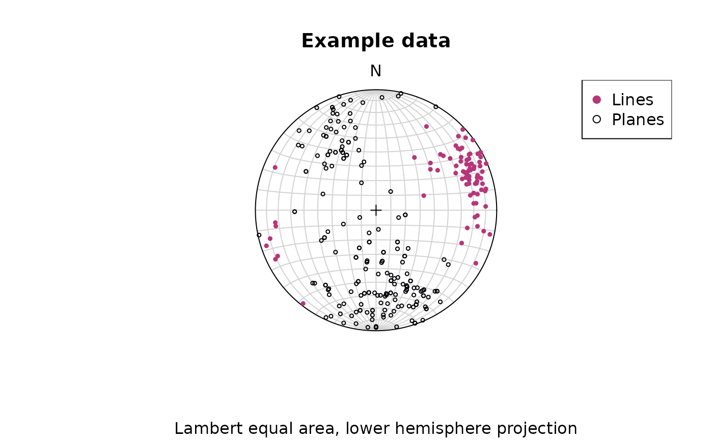
Stereographic projection
To change to equal angle stereographic, upper hemisphere projection
stereoplot(earea = FALSE)
points(lines, col = "#B63679", pch = 19, cex = .5, earea = FALSE, upper.hem = TRUE)
points(planes, col = "#000004", pch = 1, cex = .5, earea = FALSE, upper.hem = TRUE)
legend("topright", legend = c("Lines", "Planes"), col = c("#B63679", "#000004"), pch = c(19, 1), cex = 1)
title(main = "Example data", sub = "Equal angle stereographic, upper hemisphere projection")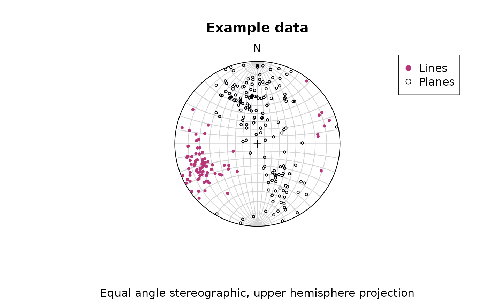
Adding great circles:
stereoplot(guides = FALSE)
lines(planes, col = "lightgrey", lty = 1)
points(planes, col = "#000004", pch = 1, cex = .5)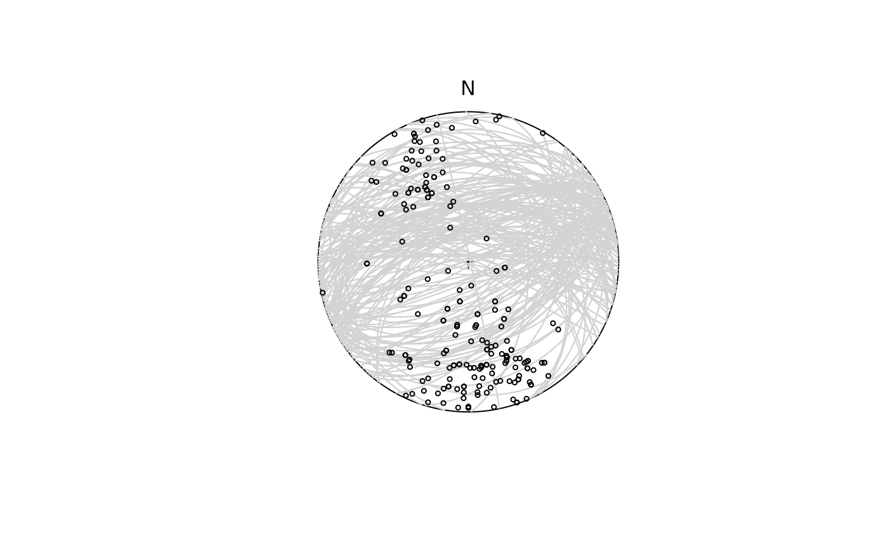
Statistics
Define some weights for our lines based on the quality reported for the measurements:
example_lines_df$quality <- ifelse(is.na(example_lines_df$quality), 6, example_lines_df$quality) # replacing NA values with 6
line_weightings <- 6 / example_lines_df$qualityThe (weighted) arithmetic mean orientation
lines_mean <- sph_mean(lines, w = line_weightings)The (weighted) arithmetic variance
lines_variance <- sph_var(lines, w = line_weightings)the (weighted) standard deviation (i.e. the 63% cone around the mean) and the 95% confidence cone around the mean:
lines_delta <- delta(lines, w = line_weightings)
lines_confangle <- sph_confidence_angle(lines, w = line_weightings)Taken together, this prints as
c(
"Variance" = lines_variance,
"63% cone" = lines_delta,
"Confidence angle" = lines_confangle
)
#> Variance 63% cone Confidence angle
#> 0.1938084 36.2745102 6.9017035Summary stats can also be retrieved through
summary(lines)
#> azimuth plunge variance 68% cone confidence cone
#> 68.5127690 20.4958671 0.2168518 38.4502642 4.7492331Plotting a summary of the stats on a equal-area projection:
stereoplot(guides = FALSE)
points(lines, col = "lightgrey", pch = 1, cex = .5)
points(lines_mean, col = "#B63679", pch = 19, cex = 1)
lines(lines_mean, ang = lines_confangle, col = "#E65164FF")
lines(lines_mean, ang = lines_delta, col = "#FB8861FF")
legend("topright", legend = c("Mean line", "95% confidence cone", "63% data cone"), col = c("#B63679", "#E65164FF", "#FB8861FF"), pch = c(19, NA, NA), lty = c(NA, 1, 1), cex = .75)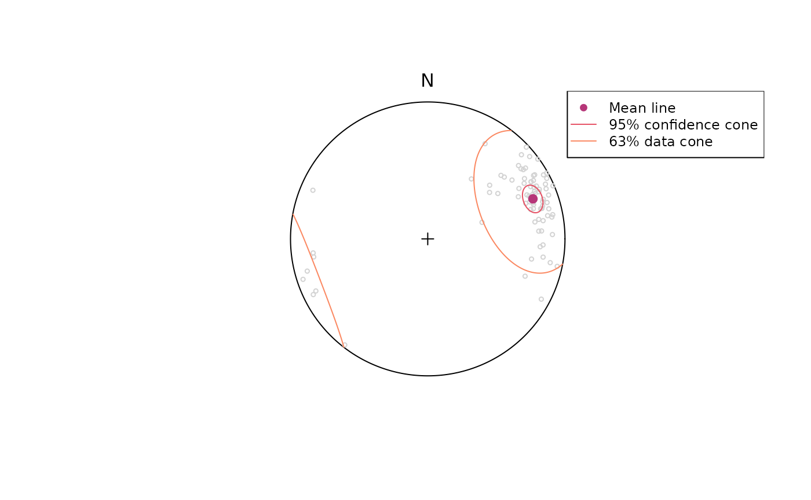
Geodesic mean and variance
The Frechet (geodesic L2) mean iteratively finds the vector that minimizes the distances to all other points.
# Mean
geodesic_mean(lines)
#> Line object (n = 1):
#> azimuth plunge
#> 69.64018 14.87713
# Variance
geodesic_var(lines)
#> [1] 0.06118261Hypothesis testing
To test if a line represents the population mean of a given set of lineations, we need to calculate the confidence region of our population.
Let’s test the hypothesis that a horizontal lineation trending towards 70° is the mean for our lineations.
line_NULL <- Line(70, 0)The 95% confidence interval (from 10,000 bootstrap samples):
ce <- confidence_ellipse(lines, n = 10000, alpha = 0.05)To visualize the confidence region of our lines:
plot(lines, col = "grey")
stereo_confidence(ce, col = "#B63679FF")
points(line_NULL, col = "#000004", pch = 16)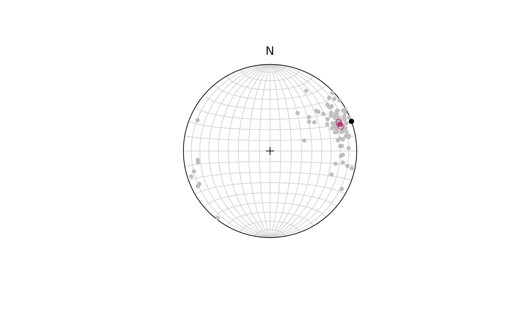
The p-value for our hypothesis line:
ce$pvalue.FUN(line_NULL)
#> [1] 0With (95% confidence) we rejected the Null Hypothesis that the given line represents the population mean as the p-value is smaller than 5%.
Orientation tensor
Eigenvectors
The orientation tensor (Scheidegger 1965) is a matrix comprising the mean direction cosines of the orientation vectors. In case of a Bingham distribution, the Eigenvectors of this tensor describe the orientation of the most dense, intermediate and least dense orientation, and thus, are used to determine the orientation of girdle-distributed vectors (e.g. folded planes).
planes_eigen <- ot_eigen(planes)
stereoplot(guides = FALSE)
points(planes, col = "lightgrey", pch = 1, cex = .5)
lines(planes_eigen$vectors, col = viridis::magma(3), lty = 1)
points(planes_eigen$vectors, col = viridis::magma(3), pch = 19, cex = 1)
legend("topright", legend = c("Eigenvectors 1", "Eigenvectors 2", "Eigenvectors 3"), col = viridis::magma(3), pch = 19, cex = .75)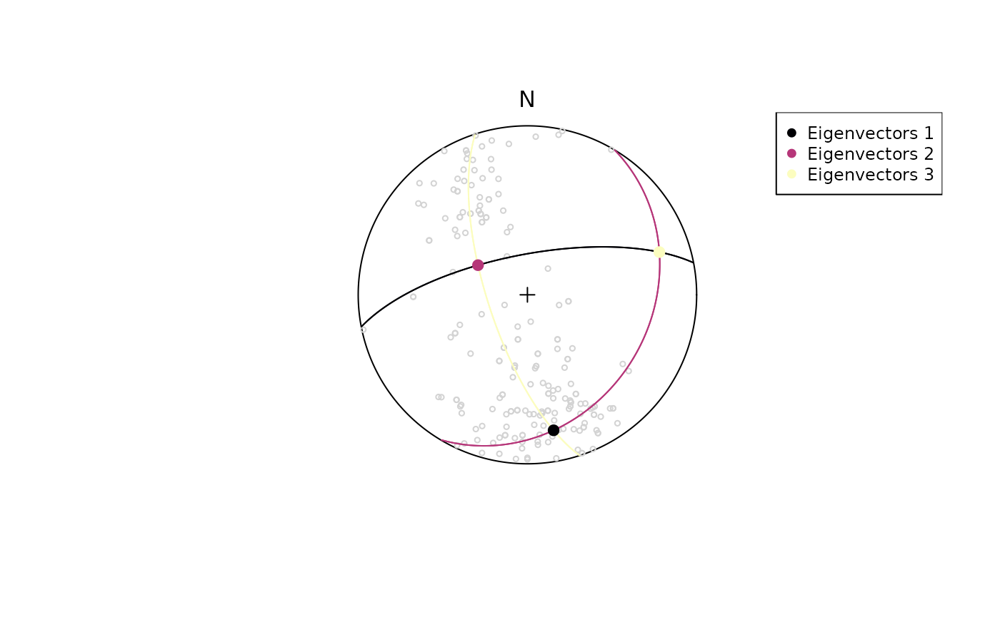
Projected mean
The Eigenvector with the largest Eigenvalue represents a vector parallel to the highest concentration of a population. This vector can also be described as the projected mean. A shortcut function for this is:
projected_mean(example_lines)
#> Line object (n = 1):
#> azimuth plunge
#> 69.09796 14.82125Eigenvalues
The Eigenvalues of the orientation tensor describe the shape of the distribution of these vectors, that is who clustered, cylindrical or random these vectors are distributed.
A Fabric plot visualizes the shape of the distribution by plotting the eigenvalues of the orientation tensor. Two different diagram are provided by {structr}, namely the triangular Vollmer plot after Vollmer (1990) and the logarithmic biplot (Woodcock plot) after Woodcock (1977).
Vollmer plot
vollmer_plot(planes, col = "#000004", pch = 1, cex = 2)
vollmer_plot(lines, add = TRUE, col = "#B63679", pch = 19, cex = 2)
legend("topright", legend = c("Lines", "Planes"), col = c("#B63679", "#000004"), pch = c(19, 1), cex = 1)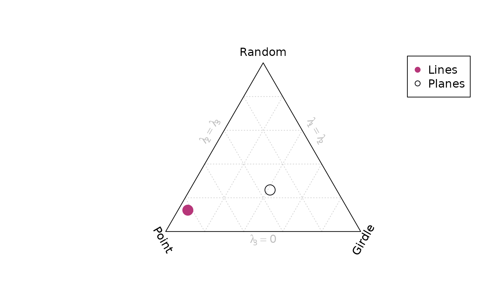
Woodcock plot
woodcock_plot(planes, col = "#000004", pch = 1, cex = 2)
woodcock_plot(lines, add = TRUE, col = "#B63679", pch = 19, cex = 2)
legend("topright", legend = c("Lines", "Planes"), col = c("#B63679", "#000004"), pch = c(19, 1), cex = 1)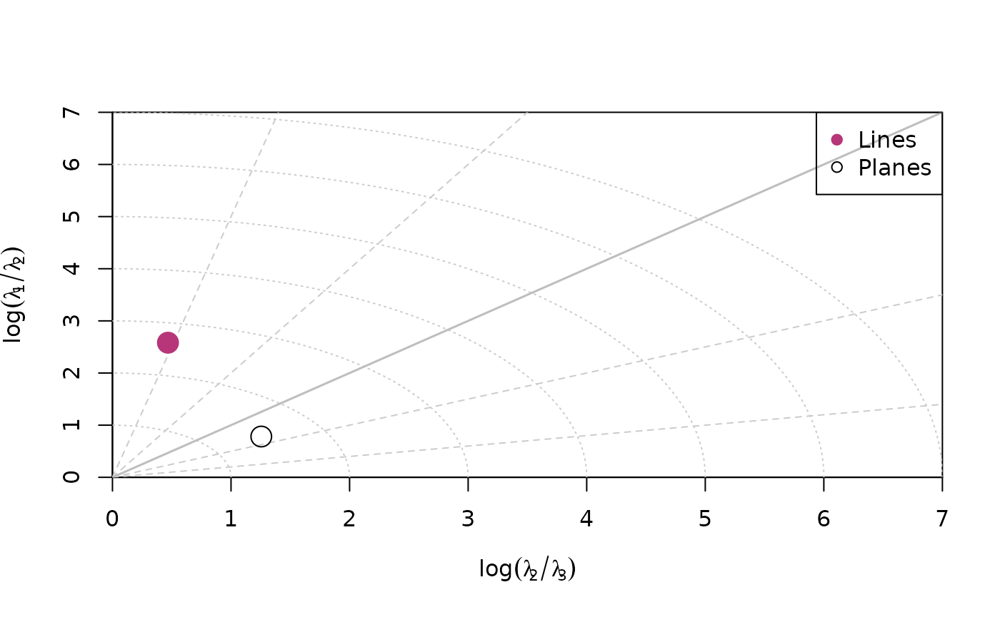
Hsü plot
hsu_fabric_plot(planes, col = "#000004", pch = 1, cex = 2)
hsu_fabric_plot(lines, add = TRUE, col = "#B63679", pch = 19, cex = 2)
legend("topright", legend = c("Lines", "Planes"), col = c("#B63679", "#000004"), pch = c(19, 1), cex = 1)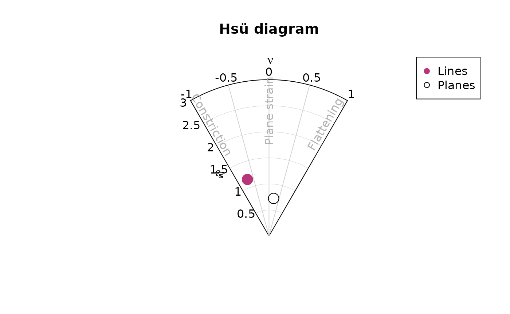
Shape parameters
There are more shape parameters using different algorithms based on the orientation tensor:
or_shape_params(planes)
#> $stretch_ratios
#> Rxy Ryz Rxz
#> 1.478428 1.873104 2.769250
#>
#> $strain_ratios
#> e12 e13 e23
#> 0.3909795 1.0185765 0.6275970
#>
#> $Vollmer
#> P G R B C I D
#> 68.327769 82.400078 49.272153 150.727847 2.037153 1.147654 170.240224
#>
#> $Flinn
#> $Flinn$k
#> [1] 0.5479625
#>
#> $Flinn$d
#> [1] 0.9955924
#>
#>
#> $Ramsay
#> intensity symmetry
#> 0.5467429 0.6229787
#>
#> $Woodcock
#> strength shape
#> 1.0185765 0.6229787
#>
#> $Watterson_intensity
#> [1] 2.351532
#>
#> $Lisle_intensity
#> [1] 144908.7
#>
#> $Nadai
#> goct eoct
#> 0.8391109 0.7266914
#>
#> $Lode
#> [1] 0.2323021
#>
#> $kind
#> [1] "SSL"
#>
#> $MAD
#> [1] 32.80303
#>
#> $US
#> [1] 28981734
#>
#> $Jellinek
#> [1] 2.794622Density plots
Densities are estimated using Kamb contouring (after
Kamb, 1959) and exponential (the default), linear, square-inverse or no
smoothing. Weighted densities can be controlled by the
weights argument and are useful when the orientation
measurements have different accuracies.
example_planes_df$quality <- ifelse(is.na(example_planes_df$quality), 6, example_planes_df$quality) # replacing NA values with 6
plane_weightings <- 6 / example_planes_df$quality
fabric_p <- or_shape_params(planes)$Vollmer["D"]
fabric_l <- or_shape_params(lines)$Vollmer["D"]
par(mfrow = c(1, 2))
stereoplot(guides = TRUE, col = "grey96")
points(planes, col = "grey", pch = 16, cex = .5)
contour(planes, add = TRUE, weights = plane_weightings)
points(planes_eigen$vectors[3, ], col = "black", pch = 16)
lines(planes_eigen$vectors[3, ], col = "black", pch = 16)
title(
main = "Planes",
sub = paste0(
"N: ", nrow(planes), " | Fabric strength: ", round(fabric_p, 2),
"\nLambert equal area, lower hemisphere projection"
)
)
stereoplot(guides = TRUE, col = "grey96")
points(lines, col = "grey", pch = 16, cex = .5)
contour(lines, add = TRUE, weights = line_weightings)
points(lines_mean, col = "black", pch = 16)
title(
main = "Lines",
sub = paste0(
"N: ", nrow(lines), " | Fabric strength: ", round(fabric_l, 2),
"\nLambert equal area, lower hemisphere projection"
)
)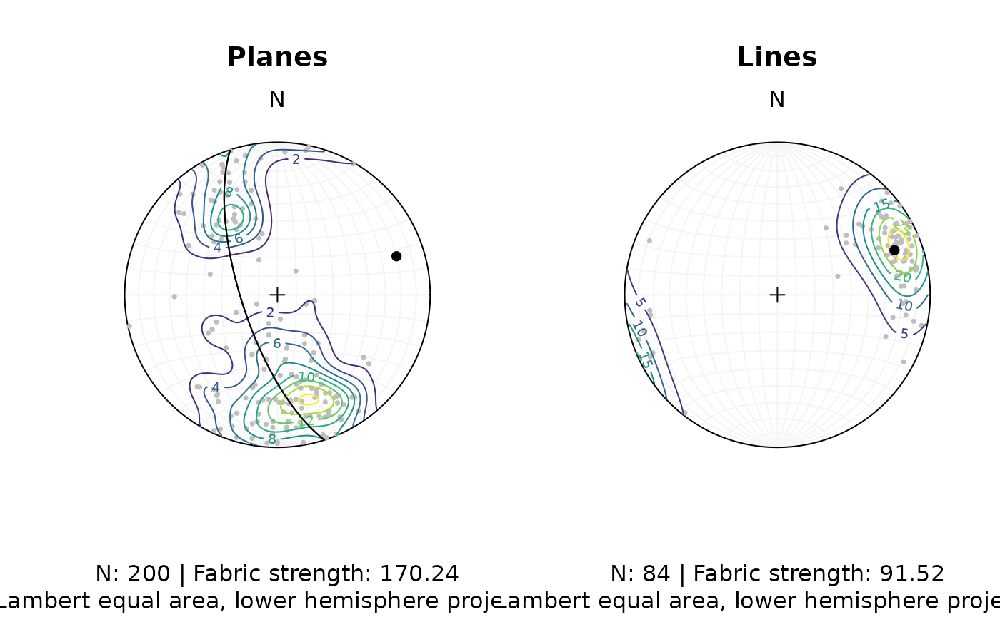
Fault plots
Fault objects consist of planes (fault plane), lines (e.g. striae), and the sense of movement. There are two ways how these combined features can be visualized, namely the Angelier and the Hoeppner plot.
Angelier plot
The Angelier plot shows all planes as great circles and lineations as points (after Angelier , 1984). Fault striae are plotted as vectors on top of the lineation pointing in the movement direction of the hanging wall. Easy to read in case of homogeneous or small datasets.
f <- Fault(
c("a" = 120, "b" = 125, "c" = 100),
c(60, 62, 50),
c(110, 25, 30),
c(58, 9, 23),
c(1, -1, 1)
)
stereoplot(title = "Angelier plot")
angelier(f, col = viridis::magma(nrow(f), end = .9))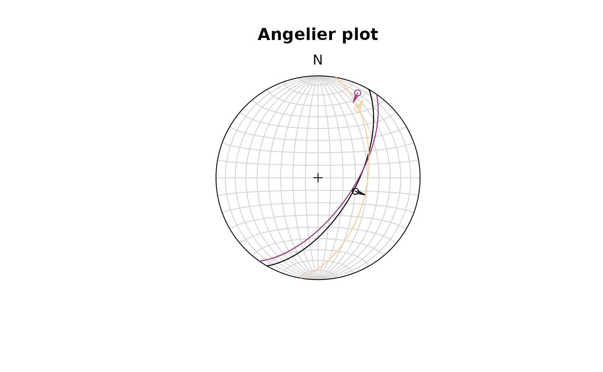
Hoeppner plot
The Hoeppner plot shows all planes as poles while lineations are not shown (after Hoeppner, 1955). Instead, fault striae are plotted as vectors on top of poles pointing in the movement direction of the hanging wall. Useful in case of large or heterogeneous datasets.
stereoplot(title = "Hoeppner plot")
hoeppner(f, col = viridis::magma(nrow(f), end = .9))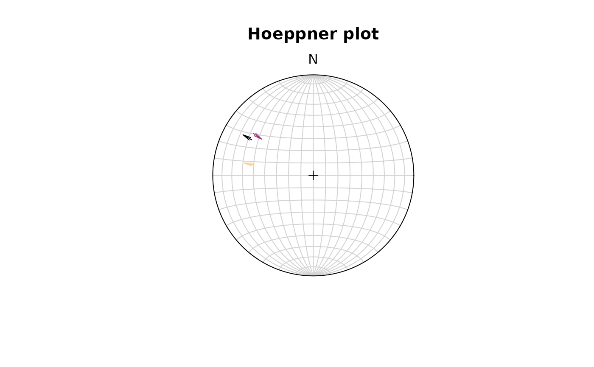